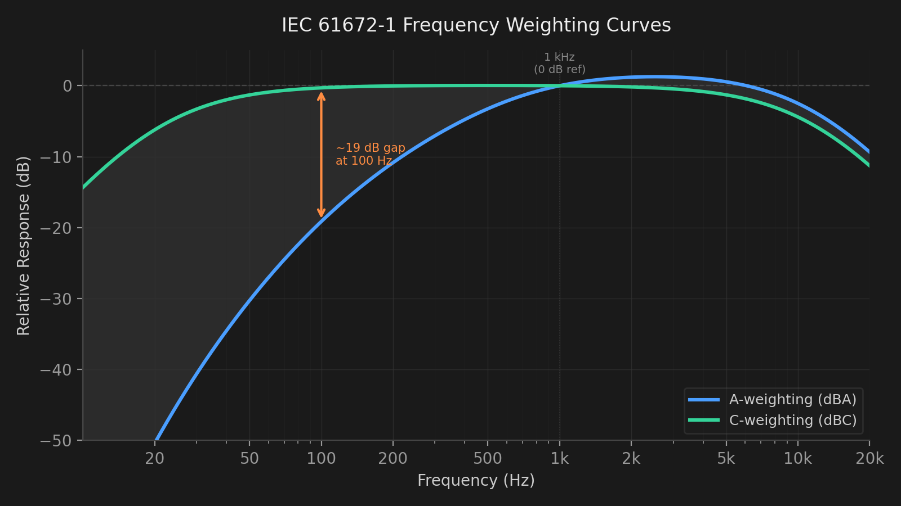

Headroom
Real-time hearing dose meter for audio professionals. Won't make your studio look cooler — but it might keep you working in it longer. Hearing loss is cumulative. So is Auris.
The problem
Studies consistently place noise-induced hearing loss among the top health risks for audio professionals — and not just live engineers or touring musicians. Long studio sessions at moderate levels accumulate exactly the same way loud ones do, just more quietly. The ear doesn't distinguish between one very loud hour and eight moderately loud ones. The damage arithmetic is the same.
That's what makes it so easy to ignore. There's no warning before the threshold shifts. By the time something feels off — the top end sounds different, mixing decisions feel harder, a tone that wasn't there before keeps you awake at night — the damage is already permanent. Most professionals know this abstractly. Almost none have ever actually measured their daily exposure.
Auris doesn't add friction to your workflow. It sits in the menu bar, measures while you work, and gives you one number that matters: how much of today's limit you've used. Over weeks and months, patterns emerge — and that's when it actually changes how you work.
Features
Requirements
How it works
Auris reads audio from a microphone positioned at your listening position and converts it to A-weighted SPL using a proper IEC 61672-1 filter — the same standard used in professional sound level meters. It samples 10 times per second and accumulates your hearing dose according to the NIOSH Recommended Exposure Limit formula. The key relationship: at 85 dBA you have 8 hours; every 3 dB increase halves that time.
| Level | Safe duration | |
|---|---|---|
| 85 dBA | 8 hours | NIOSH criterion |
| 88 dBA | 4 hours | |
| 91 dBA | 2 hours | |
| 94 dBA | 1 hour | |
| 97 dBA | 30 minutes | |
| 100 dBA | 15 minutes |
A parallel C-weighted path runs simultaneously for peak impulse monitoring. Unlike A-weighting, C-weighting is nearly flat from 31.5 Hz to 8 kHz — it accurately captures the energy of transient events such as drum hits and loud clicks that can cause immediate cochlear damage regardless of cumulative dose. EU Directive 2003/10/EC specifically mandates C-weighted peak measurement for exactly this reason.

IEC 61672-1 A-weighting vs C-weighting — A-weighting de-emphasises bass, where C-weighting stays flat. The gap between the two readings indicates how much low-frequency energy A-weighting is missing.
All data stays on your Mac. No telemetry, no cloud sync, no servers.